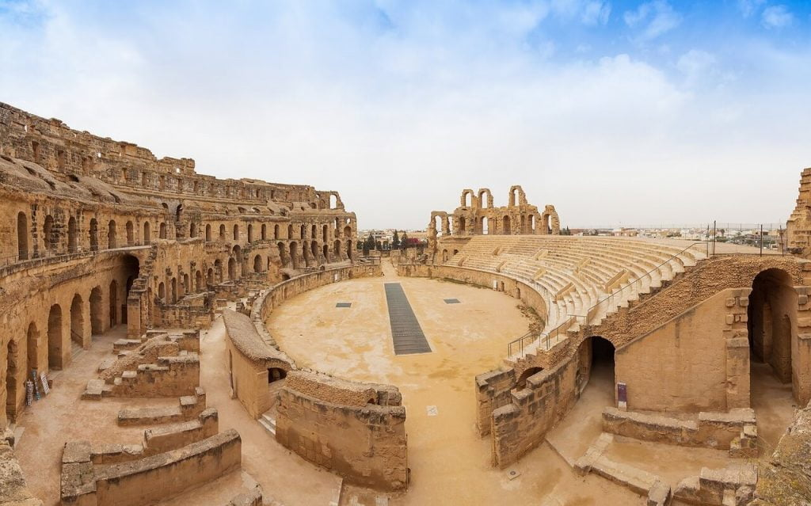
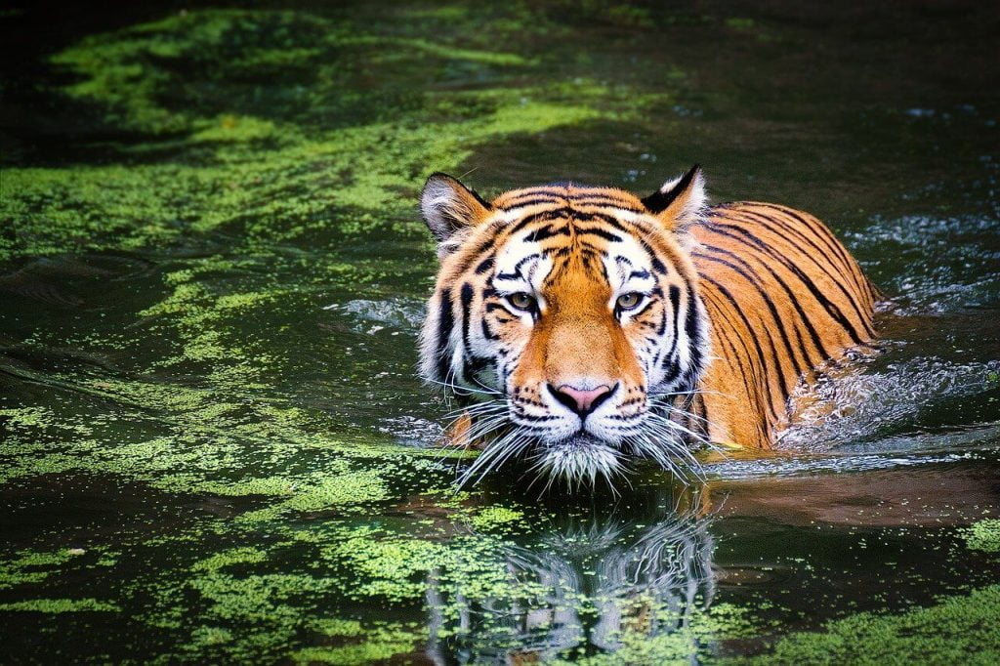
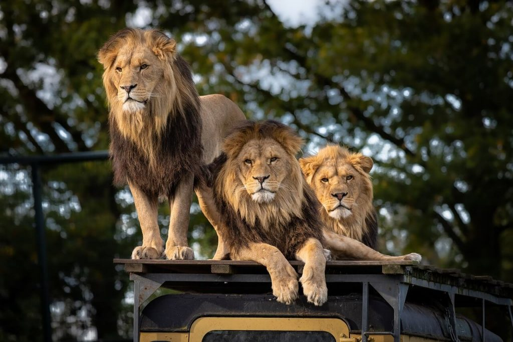

ဒီနေရာမှာ ကျားနဲ့ ခြင်္သေ့ ဘယ်လိုမှ တွေ့စရာ မရှိဘူးလို့ စောဒက တက်စရာ ရှိပါတယ်။ ပုံမှန် ဆိုရင်လဲ ကျက်စား နေထိုင်ရာ နေရာဒေသခြင်း မတူညီတာမို့ တွေ့စရာ အကြောင်းက သိပ်တော့ မရှိပါဘူး။ ဒါပေမယ့် ခြင်္သေ့ သော်လည်းကောင်း၊ ကျားသော်လည်းကောင်း မျက်စေ့လယ် လမ်းမှားပြီး နှစ်ကောင် မျက်နှာချင်းဆိုင် တိုးမိကြတယ် ဆိုပါစို့ဗျာ။
ပထမဆုံး အရွယ်အစားနဲ့ အလေးချိန်ကို ယှဉ်ကြည့်ကြရအောင်ပါ။ အရွယ်ရောက်ပြီး ကျားတစ်ကောင်ရဲ့ အလေးချိန်ဟာ ပေါင် ၈၀၀ လောက် ရှိပါတယ်။ အရွယ်ရောက်တဲ့ ခြင်္သေ့တစ်ကောင်ကတော့ ပေါင် ၅၅၀ လောက်ပဲ ရှိပါတယ်။ ဒါပေမယ့် ဒီနှစ်ကောင်ရဲ့ အရွယ်အစားဟာ မတူပါဘူး။ ကျားဟာ ပိုလေးပေမယ့် ခြင်္သေ့ကတော့ အရွယ် ပိုကြီးပါတယ်။
ကိုယ်ခန္ဒာမှာ ကြွက်သားတွေဟာ အဆီထက် ပိုပြီး လေးပါတယ်။ ကျားနဲ့ ခြင်္သေ့ရဲ့ ကိုယ်တွင်း တည်ဆောက်ပုံကို လေ့လာကြည့်ရင် ကျားဟာ ကြွက်သားတွေ ပိုများပြီး ခြင်္သေ့ကတော့ အဆီ ပိုများနေတာကို တွေ့ကြရပါတယ်။ ဒါ့ကြောင့်လဲ အဆီပိုများတဲ့ ခြင်္သေ့က အရွယ်ပိုကြီးပေမယ့် ပေါ့နေတာ ဖြစ်ပါတယ်။ ကျားကတော့ ကျစ်လစ်တဲ့ ကြွက်သားတွေနဲ့ ဖွဲ့စည်း တည်ဆောက်ထားတာမို့ အရွယ်သေးငယ်ပေမယ့်လဲ ကိုယ်အလေးချိန် ပိုများရတာ ဖြစ်ပါတယ်။
ဒီတော့ အကြမ်းဖျင်း ကြည့်ရင် ကြွက်သား ပိုများတဲ့ ကျားက နိုင်မယ်လို့ ပြောနိုင်ပါတယ်။

ရှေးရောမခေတ် ကျားနဲ့ ခြင်္သေ့ သတ်ပွဲကို သရုပ်ဖော်တဲ့ ပန်းချီကားတိုင်းမှာလဲ ကျားဖက်က အနိုင်အနေရဲ့ ရေးဆွဲလေ့ ရှိကြပါတယ်။
၁၉ ရာစုနှစ်က ကိုလိုနီ အီန္ဒိယ ပြည်က မဟာရာဂျာ တစ်ပါးဖြစ်တဲ့ (Gaekwad of Baroda) ဟာ ကျားနဲ့ ခြင်္သေ့ သတ်ပွဲကို ကျင်းပခဲ့ပါတယ်။ ဒီပွဲမစခင် လောင်းကြေးဒိုင်တွေက ကျားဖက်က အသာ ၁ လေး ၃၇,၀၀၀ လေးနဲ့ ဈေးဖွင့်ခဲ့ ကြပါတယ်တဲ့။ တကယ့်ပွဲမှာလဲ ကျားကပဲ အနိုင်ရရှိခဲ့ပါတယ်။ ဒီပွဲမှာ ကျားနိုင်တဲ့ အတွက် ခြင်္သေ့ဖက်က လောင်းခဲ့တဲ့ ပွဲစီစဉ်သူ မဟာရာဇာဟာ ရူပီးငွေ ၃၇,၀၀၀ တိတိ ဆုံးရှုံးခဲ့ပါတယ်။
၂၀၁၁ ခုနှစ်တုန်းကလဲ တူရကီ နိုင်ငံ အင်ကာရာ မြို့ (Ankara, Turkey) က တိရိစ္ဆာန်ရုံထဲက ကျား လွတ်သွားပါတယ်တဲ့။ ဒီလွတ်သွားတဲ့ ကျားဟာ မျက်စေ့လည် လမ်းမှားပြီး ခြင်္သေ့နေတဲ့ လှေင်အိမ်ထဲ ရောက်သွားပါတယ်။ ဒီကျားဟာ ခြင်္သေ့ရဲ့ လည်ပင်ဘေးက Jugular Vein ဂျူဂူလာ သွေးပြန်ကြောမကြီးကို လက်သဲနဲ့ တစ်ချက်ထဲ ပုတ်ဖြတ်လိုက်ပြီး ခြင်္သေ့ကို သတ်ပစ်ခဲ့ပါတယ်။

ဒါပေမယ့် ဂလက်ဒီယေတာ ကစားကွင်းထဲမှာ ကျားနဲ့ ခြင်္သေ့ သတ်တာ၊ တိရိစ္ဆာန်ရုံထဲမှာ သတ်တာတွေက တောထဲက အခြေအနေ တွေနဲ့တော့ ကွာပါတယ်။ အကယ်လို့ တောထဲမှာ ကျားနဲ့ ခြင်္သေ့ ရင်ဆိုင်တွေ့ကပြီ ဆိုပါစို့။ ဘာဖြစ်မယ် ထင်ပါသလဲ။ ဒီမေးခွန်းဟာ အချို့သော သဘာဝ ပတ်ဝန်းကျင် ထိန်းသိမ်းရေး ပညာရှင်တွေ အကြားမှာ မေးနေတဲ့ မေးခွန်းတစ်ခုလဲ ဖြစ်ပါတယ်။ အိန္ဒိယ နိုင်ငံ ဂါတောအုပ် (Gir Forest) မှာရှိတဲ့ အာရှ ခြင်္သေ့တွေကို ကူနိုပယ်ပါ တော (Kuno Palpur) ကို ရွှေ့ဖို့ စီစဉ်နေ ကြပါတယ်။ ပြဿနာက အဲ့သည်တောမှာ လက်ရှိ ကျက်စားနေထိုင်နေတဲ့ ကျားတွေ ရှိနေတာ ပါပဲ။ လက်ရှိမှာတော့ ဒီအစီအစဉ်ကို ခန ဆိုင်းငံ့ထားရပါတယ်။ ရွှေ့ပြောင်းလိုက်တဲ့ ခြင်္သေ့တွေကို ဒေသခံ ကျားတွေက သတ်ပစ်မှာ ကြောက်လို့ပါတဲ့။

ဒါ့ကြောင့် တစ်ကောင်ချင်းဆို ကျားက နိုင်မှာ ဖြစ်ပေမယ့် တောထဲမှာ အုပ်နဲ့နေတဲ့ ခြင်္သေ့အုပ်ကို ကျားတစ်ကောင်ထဲ အနေနဲ့ အနိုင်ရဖို့ ဆိုတာကတော့ မလွယ်ပါဘူး လို့ ပညာရှင်တွေက ထောက်ပြကြပါတယ်။
Reference: Tiger vs. Lion—Who Would Win? | Smithsonian